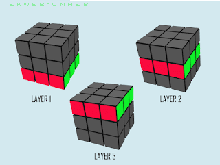
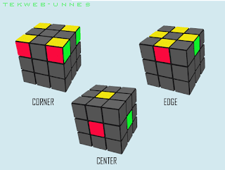
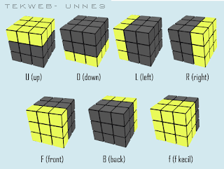

Apa itu Rubik?
PROLOG
Rubik adalah permainan mengolah otak yang butuh trik-trik khusus untuk menyelesaikannya. Seperti pada awalnya saya dulu juga mengalami kesulitan saat mencoba bermain rubik, namun karena saking kepengen banget bisa, saya gak pernah menyerah untuk terus berlatih dan berlatih setiap hari, saya mencoba mencari solusinya di google, dan dalam jangka waktu 30 hari saya sudah mahir dan hingga kini sudah diluar kepala.
Nah, Pada kesempatan kali ini, saya akan sedikit berbagi trik atau cara bermain rubik 3x3 dengan metode yang paling reguler atau masih basic banget. Dan saya berbagi tutorial ini untuk kalian yang masih pemula, jadi saya kemas tutorial ini dengan bahasa yg sederhana dan diharapkan mudah dipahami dan dimengerti oleh pemula. Untuk para master rubik saya yakin udah pada nggak heran sama beginian alias udah nggak butuh lagi tutorial kayak gini.


Bagian-bagian Rubik :
- Center Pieces
- Edge Pieces
- Corner Pieces
- Layer / Lapisan

Arah Pergerakan Notasi Rubik :
- R (Right) : Adalah gerakan memutar sisi kanan searah jarum jam.
- R' (R aksen) : Adalah gerakan memutar sisi kanan berlawanan arah jarum jam.
- L (Left) : Adalah gerakan memutar sisi kiri searah jarum jam.
- L' (L aksen) : Adalah gerakan memutar sisi rubik sebelah kiri berlawanan arah jarum jam.
- U (Up) : Adalah gerakan memutar sisi atas searah jarum jam.
- U' (U aksen): Adalah gerakan memutar sisi rubik bagian atas berlawanan arah jarum jam.
- D (Down) : Adalah gerakan memutar sisi bawah searah jarum jam.
- D' (D aksen) : Adalah gerakan memutar sisi bawah berlawanan arah jarum jam.
- F (Front) : Adalah gerakan memutar sisi depan searah jarum jam.
- F' (F aksen) : Adalah gerakan memutar sisi depan berlawanan arah jarum jam.
- f (Front double) : Adalah gerakan memutar sisi F double searah jarum jam.
- f' (Front aksen double) : Adalah gerakan memutar sisi F' double searah jarum jam.
- B (Back) : Adalah gerakan memutar sisi belakang searah jarum jam.
- B' (B aksen) : Adalah gerakan memutar sisi belakang berlawanan arah jarum jam.
Cara Menyelesaikan Rubik 3x3